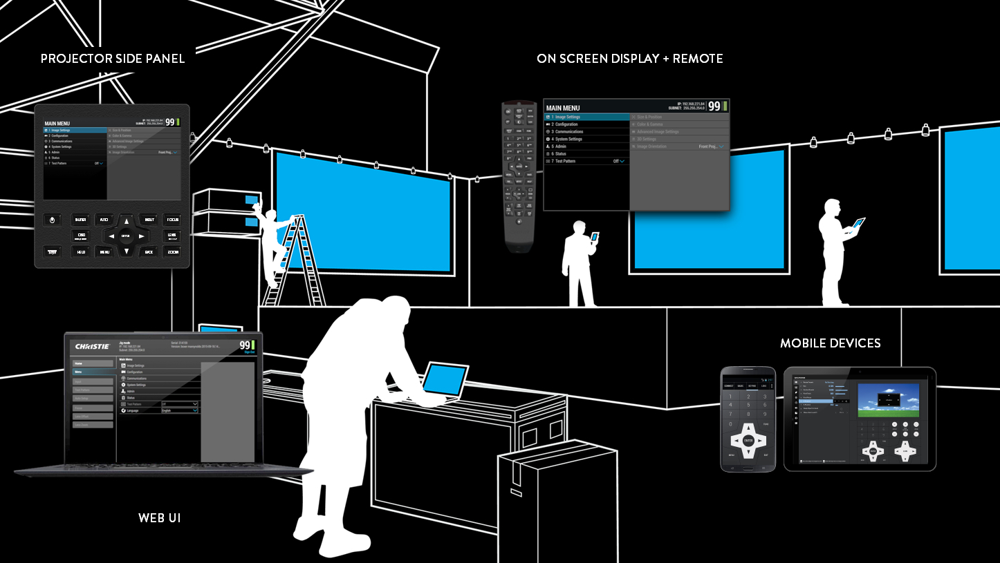
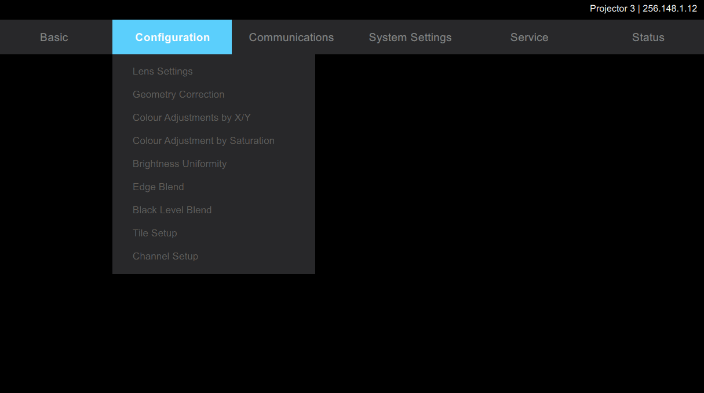
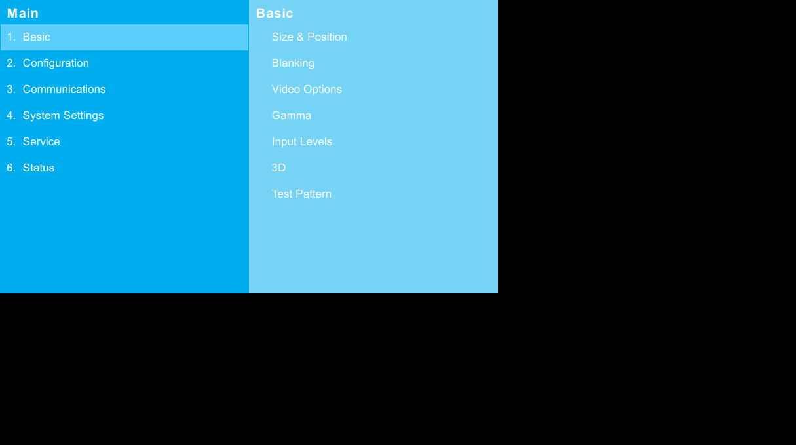
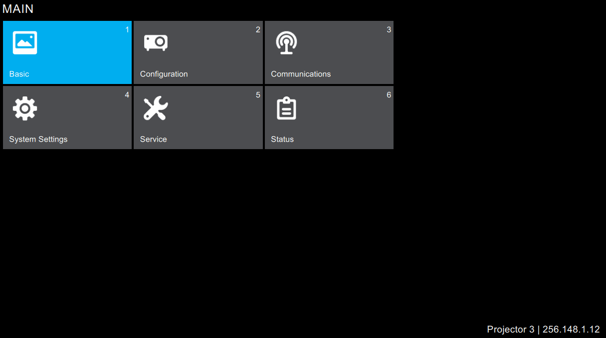
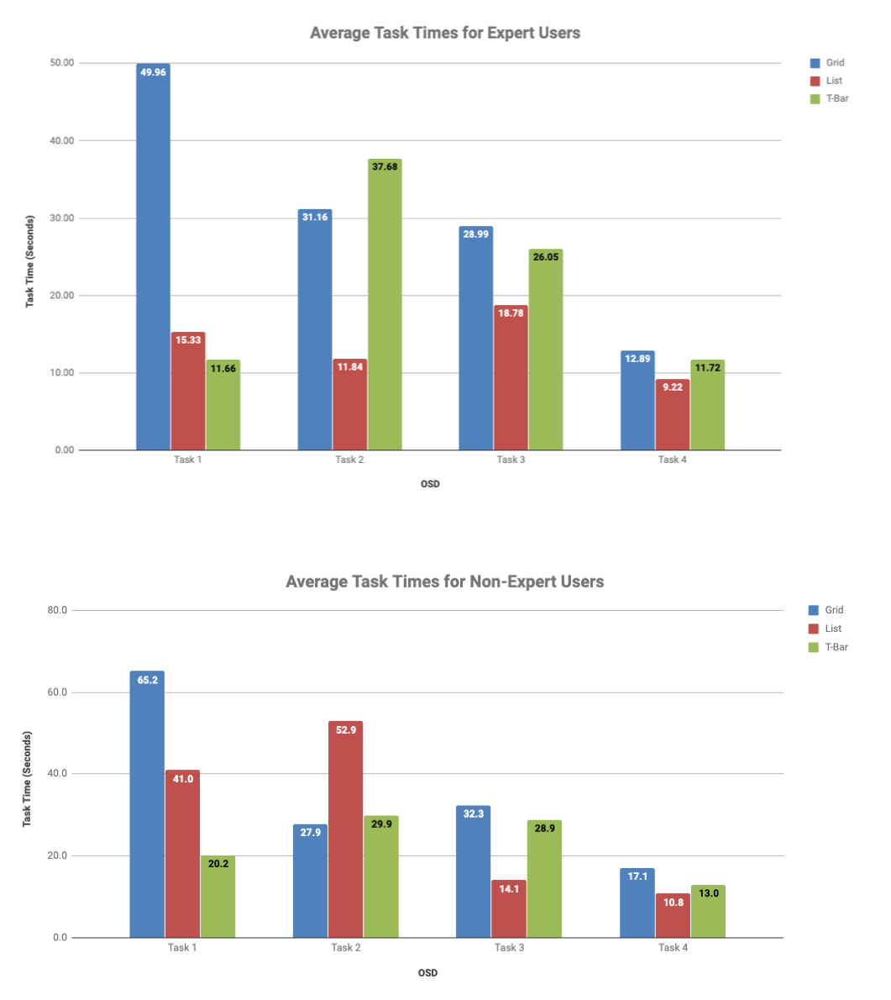
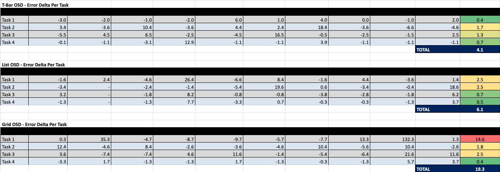
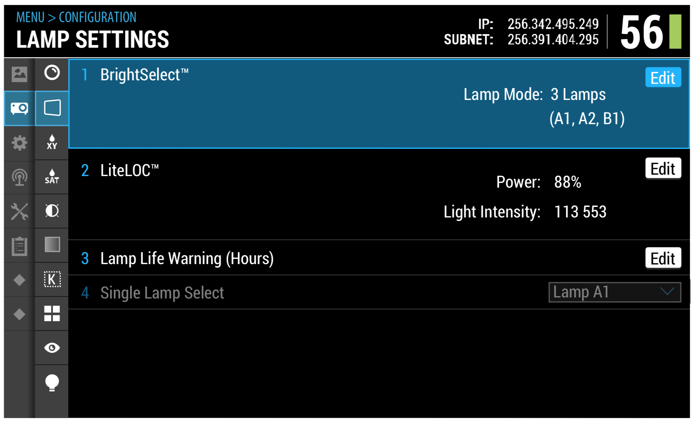
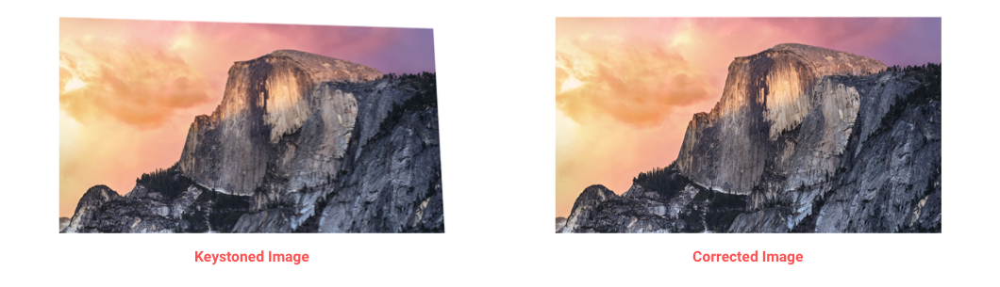
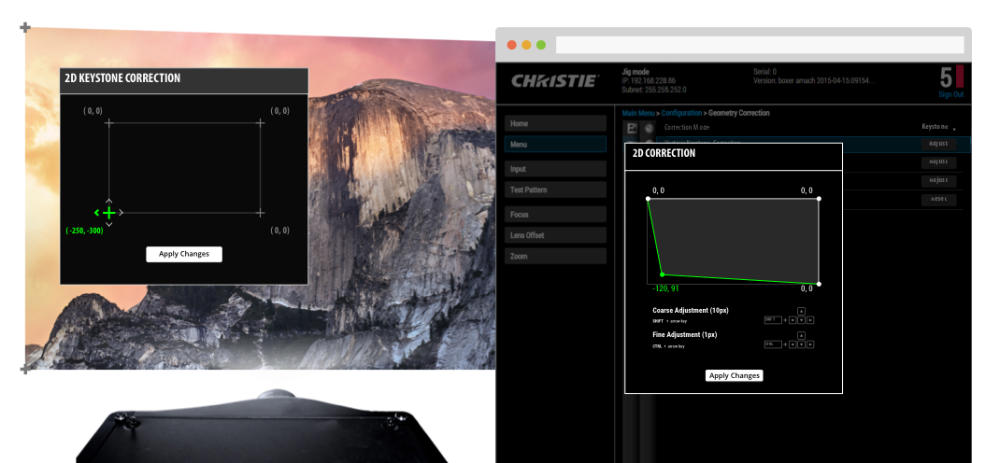

The Boxer 4K30, released in April 2016, is a high brightness 4K projector used for live events across the world. Boxers are always on the road; they’re set up, used for a show, torn down, and then sent off to the next gig. The primary users – field technicians – are experts who care about reliability, efficiency, and, flexibility. On this project, I worked with the Lead UX Designer to design a new multi-platform user interface for this new generation of projector.

Field technicians don't have a lot of time to get live events up and running so they meticulously try to optimize every step in their workflow. Naturally, they are power users of the remote control – they memorize the layout of the controls and key press sequences. They have the menu structure memorized and are able to navigate anywhere in the system with their eyes closed. It took them a lot of time and experience to get to this level and, as a result, they're averse to any changes in the UI. New UI means that they have to spend time relearning - time which they don't have to spare.
My task for this project was to quantitatively and qualitatively evaluate three different UI prototypes with users. I evaluated the UI options based on effectiveness (error rates; critical vs. non-critical errors), efficiency (time on task; number of actions to complete a task), and emotional response (self-rated satisfaction; ease of use; qualitative observations). I also spent as much time as possible testing the UI with some of our most active users, making sure to listening to their concerns and feedback closely. I evaluated the following prototypes which shared the same information architecture but applied different navigational models:
• The T-Bar model used horizontal navigation at the root level and then switched to a vertical cascading menu system with previews at the sub-menu level.

• The List model used a series of stacking panes with a persistent breadcrumb trail adopted from my design of the Fusion UI. This model also featured in-menu previews.

• The Grid model was the most unique of the options; it utilized an array to maximize the use of the D-Pad on the remote control. In this model, menu icons were added as a way to make scanning menus easier and faster.

10 participants - 6 experts and 4 non-experts - were recruited for the study using selective quota sampling (since they represented the majority of our user base, it was especially important to get buy-in from technicians). Each participant was asked to complete four navigational tasks in each UI model. The tasks and the presentation of the UIs across participants were counter-balanced. With help from the software team, we were able to log time on task (TOT) and navigational errors for each session.

The time on task results suggested that for expert users, the List model was the most efficient. For non-expert users (a minority of the Boxer 4K30) the T-Bar seemed to perform the best. Error results suggested that the List model was also the least error-prone for expert users; non-expert users produced the fewest errors with the T-Bar model.
Error rates for all users were lowest for the T-Bar model.

We compared the quantitative results with the qualitative insights from each user. We learned that:
• The List was the favourite for most users but the visual design caused some confusion; the light blue 'preview' colour state was often mistaken for the 'selected' state.
• In the T-Bar model, the navigation switch from horizontal in the root menu to vertical in the sub-menus became tedious throughout several tasks.
• The one great thing about the Grid UI was the icons; most users commented that although the grid layout was not ideal, the icons served as an excellent wayfinding cue.
In the end, after a few more iterations, the final design was a hybrid that largely utilized the stacking pane system of the List model with visual design cues from the T-Bar and the menu icons from the Grid model.

Before the Boxer 4K30, web UIs for projectors were rarely used. Not only was it an additional effort to set up a local network at each job site, the interactions offered just didn't provide any advantage over using a remote control. As a team we realized that we could leverage the platform and the input modalities (mouse and keyboard) of a laptop to make some of the interactions for projector even more efficient on web.
One example of this is for a feature called Keystone Correction. Sometimes projectors are not completely perpendicular to the surface they're projecting onto or sometimes the surface itself is not perfectly flat. This trapezoidal image distortion can be digitally corrected without adjusting the physical position of the projector or the surface by managing the offsets of the corners of the image.

With the remote, Keystone Correction is tedious. The user can select a corner, click to enter and edit mode, and then either type in a pixel offset value or hold down a direction on the D-Pad and watch the corner move one pixel at a time. The latter was the most common approach and it took a very long time.

With a keyboard and a mouse, the interaction was far better. The user could click and drag on of the vertices of the image to move one of the corners of the image in real time or they could use keyboard short cuts for both coarse (100px at a time) and fine adjustments (1px at a time).
When evaluating multiple versions of a design, it's often a good idea to understand what worked well in each option and then see if a hybrid option that combines the best ideas in each iteration can be created. While this may seem obvious, I often see designers approaching multivariate testing with the mindset that one of the options presented has to win out against the others.
Additionally, when designing multi-platform interactions, it's critical to view the interaction on each new platform as a new design problem. Consistency with platform patterns, rules, and operating principles should be strongly considered but sometimes the best solutions come from breaking consistency and optimizing for the specific experience or workflow.
SUMMARY
I evaluated three competing navigation models using a mixed methods research approach. I designed new interactions for a web app based on existing remote control paradigms.
MY ROLES